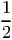
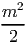
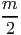
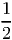

Date: November 21, 2017.
This problem came up in the process of searching for lower bounds on the number of cycles in a graph with certain properties.
I chose this proof as my sample because it’s my favorite short proof. The final bit of reasoning is analogous to reducing the problem to a halting problem and solving that halting problem.
This is a proof of the lower bound of the pseudo-boolean function
Proof.
Proof.
| ∑ i=1m-1 ∑ j=1ia ji | = 1(a1) + 2(a1 + a2) + 3(a1 + a2 + a3) + … | ||
| = a1 ∑ j=1m-1j + a 2 ∑ j=2m-1j + a 3 ∑ j=3m-1j + … |
| ∑ i=1m-1 ∑ j=1ia ji | = ∑ i=1m-1a i(m - i)(m + i - 1)∕2 | ||
| =  ∑ i=1m-1a i(m2 - m + i - i2) | |||
| =  ∑ i=1m-1a i - ∑ i=1m-1a i +  ∑ i=1m-1ia i - ∑ i=1m-1i2a i |
Proof. Note that
Proof. We begin by reversing the indices of the aj’s and applying Lemma 2.3 to get
If ε = 0, then all the ai = 0 and so the total is 0 and the theorem holds.
If ε = 1, then exactly one ai≠0. Let us call it ap for positive. Then the total is equal to kak, because no pair of ai’s can be non-zero. Taking the minimum k = 1, we get the total is 1 and the theorem holds.
Note that if az is positive, it adds exactly z + 2z ∑ j=z+1ma j to the total, independent of the rest.
Suppose that there exists some y such that ay = 1 and for all ai = 0, i < y. Let y be the minimum such index. The contribution of ay is y + 2y ∑ j=y+1ma j. Similarly the contribution of ay-1, if we swap the values of ay and ay-1, is (y - 1) + 2(y - 1) ∑ j=yma j. However, if we only swap these two values, the values, and thus the contributions of those values, with index greater than y are left unchanged. Therefore, the contribution of ay-1, if the values are swapped, is
Thus our minimum total, given that ε < i implies that ai = 0, is